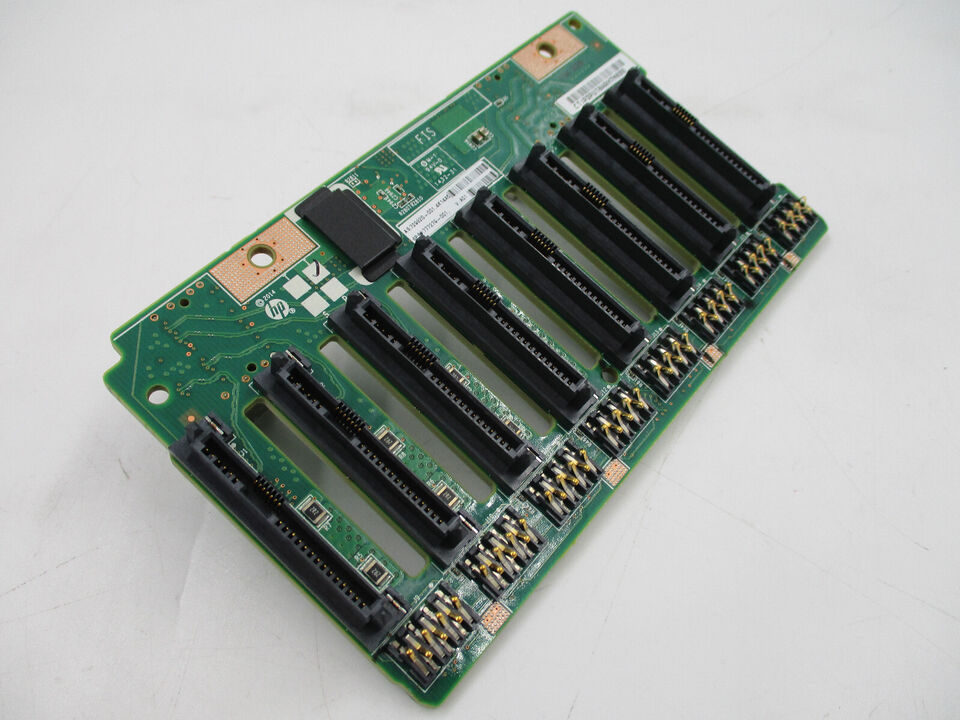
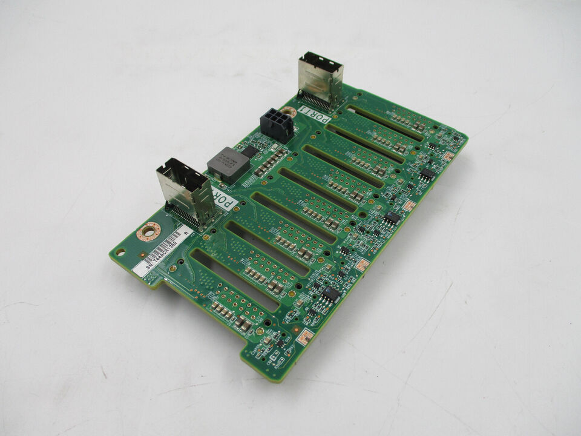
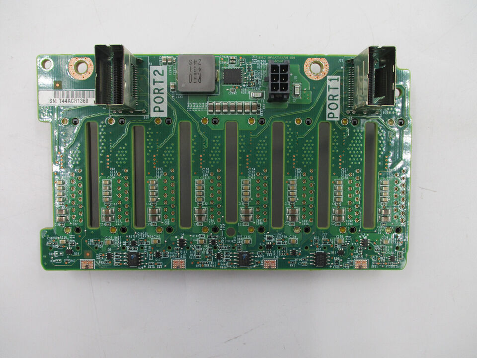
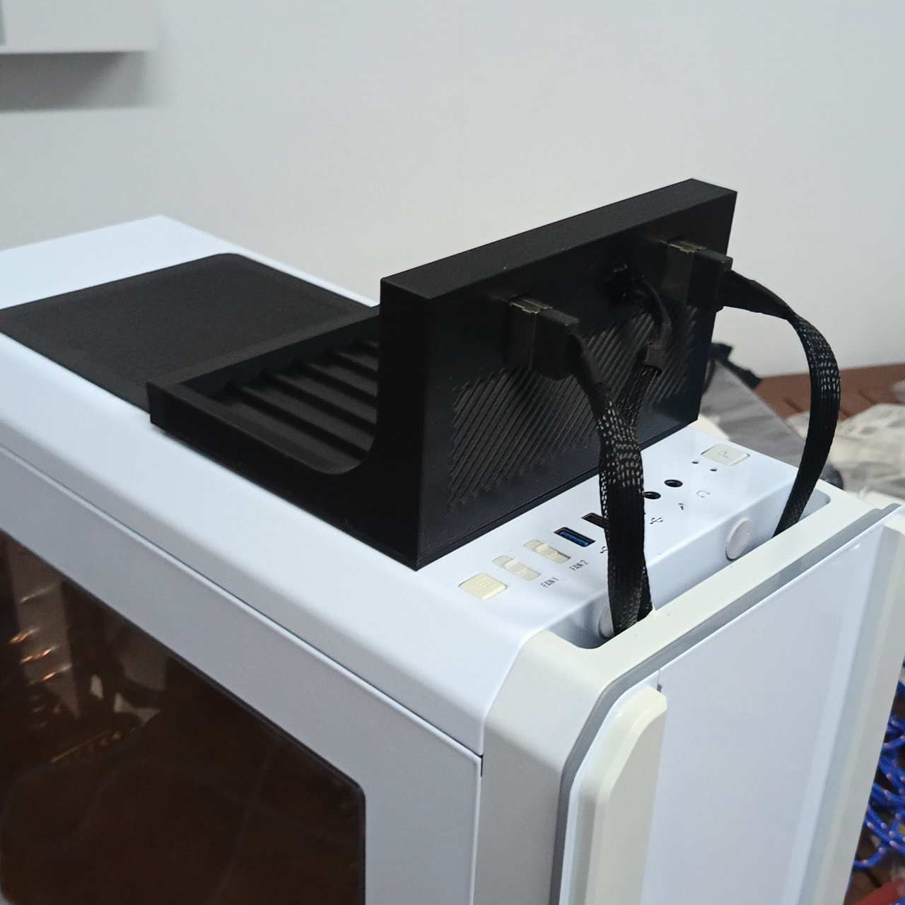
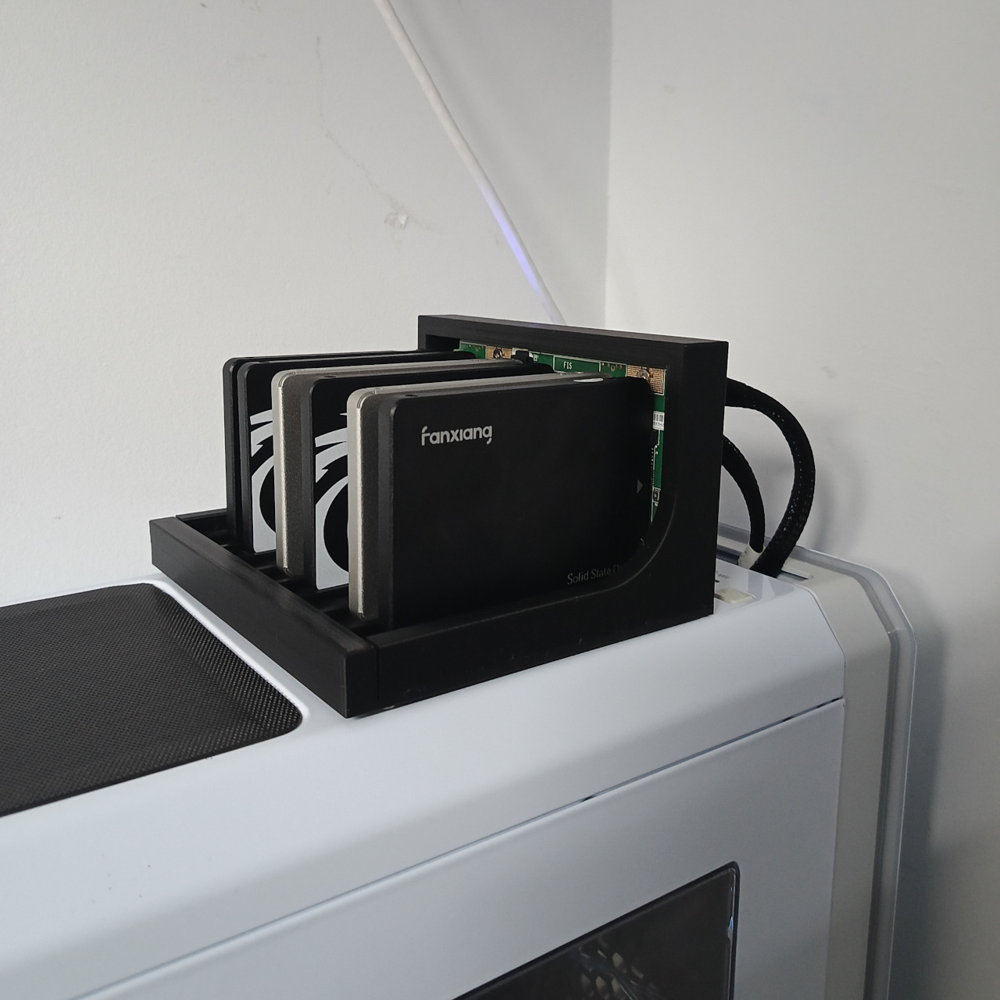

Upcycled 8-bay disk station
6 minutes read •
My janky Ceph setup with cheapest consumer grade SSDs started to get way slower and noticable than I had hoped.
In terms of simplicity, I started thinking of moving all the disks to a single machine and sharing them out from there, i.e. a more traditional NAS box. This single machine would become the single-point of failure, but I think I can accept that.
I was already looking at parts I would have to source to build this new machine that would allow me to hook up all the 6 SSDs to it, when on a whim I checked my desktop PC motherboard. To my surprise, the MSI H270 Tomahawk Artic gaming motherboard had 6 SATA3 ports. And it even supported hot-swap.
Without any further ado, I decided to not spend more money on new hardware and instead repurpose my desktop as the new homelab node for storage. After spending some time on figuring out how ZSF on Talos works, I soon got everything working.

I knew that I had to prepare for the inevitable future, when one of those cheap SSDs fails. And with all the drives mounted inside the case, replacing the faulty one would be an undertaking.
Upcycle a backplane?
I got the wild idea that maybe I can find some cheap server backplane on eBay and repurpose it for my needs. Most used server parts are a bit harder to find (and more expensive) on EU eBay, so I didn't know what to expect.
After some searching I managed to find a HP DL380 G9 backplane PCB for a very reasonable price of 10€. From the pictures, it looked like something that would fit the bill - it had two standard SFF-8087 ports, and a 6-pin molex connector for power (presumably).



While I was waiting for the backplane to arrive, I did some preliminary research about it on the internet. Luckily someone already had mostly mapped out the molex connector pins - 2x 12V, 2x GND and 2 unknown pins. According to another source, one or the other of the 2 unknown pins are unconnected depending on where the backplane was in the original server.
If these 2 unknown pins were some form of data pins, which were required to make this backplane work, I would be out of luck. It would be difficult to reverse engineer these without access to the original servers from where these backplanes were from. However, I was hoping they were optional or something simple, like pulling the voltage up/down to constant levels.
Another big question mark for me was the caddy connectors below the SATA ports. In theory, based on what I could find on the internet, they are used to blink the LEDs on the front of the caddies on the front of the server. But the question lingering in my mind was, if they are also used as some sort of switch to indicate that the disk has been properly inserted. If that were the case, I would have to find a way to bypass that.
As the main input voltage for this board was 12V, the easiest option would be to power it from the 12V PCIe connector that usually powers GPUs. Of course the connector on the backplane was not directly compatible with the PCIe connector. I would have to make my own cable. I ordered some sacrificial PCIe cables from AliExpress that I could splice together with the backplane cable that came with the backplane.
The disk station is born
In the mean time, I could get started with designing an enclosure for the PCB. I wanted to mount it on top of my PC case, and make the disks easily swappable. As there were holes in the PCB for airflow, I added a grille to the enclosure design as well. Mostly because it looked better, but also just in case if I ever needed to quickly introduce some active cooling there.

By the time the cables arrived from China, I had already finished 3d printing the enclosure and mounting the PCB in it.
I spliced together the power cable, leaving the unknown pins floating. I verified with a multimeter that all the pins were connected to correct ones and was ready to test it out.
I disconnected all the drives from the computer and connected the SATA ports from the motherboard to the SFF-8087 ports on the backplane, and connected the PCIe power connector from the PSU to the backplane. I powered up the computer. And... nothing blew up. The computer booted just fine.
But the disks in the backplane weren't being recognized. I took out the multimeter again, and started probing. The backplane was getting 12V input voltage, and the it was bumping it down to 5V and 3.3V for the SATA connectors.
Since the power seemed to be fine, it must've been something related to data. Either the 2 unknown pins or the caddy connectors, I thought. I disconnected the backplane from the computer and put the disks back as they were for the time being.
I needed to do more research. I was looking up the datasheets for the chips on the backplane to get any hints for the unknown pins in the molex connector. Nothing suggested that these pins would cause the drives not to work. The caddy connectors seemed to be unlikely as well, as from the photos I could find online, the flex PCB inside the caddies seemed fairly simple, so I was guessing there's no chips on there and the caddy connectors drive the LEDs directly.
Amidst my web searching, I came across a post on one forum, where I learned that SFF-8087 breakout cables exists in two flavours - forwards and backwards. Since it was my first time working with SFF-8087 format, I hadn't even considered this. It seemed like the most likely cause for my issues. I ordered the backwards cable that I needed, and waited.
Once the new cable arrived, I hooked everything up again and this time, the drives were being recognized by the motherboard and everything worked. I'm quite happy how it turned out.

